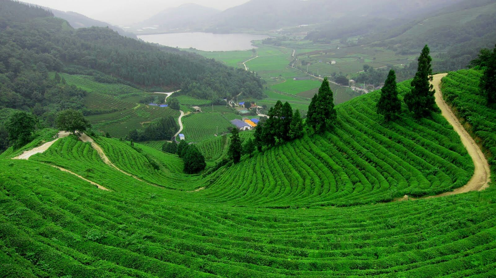
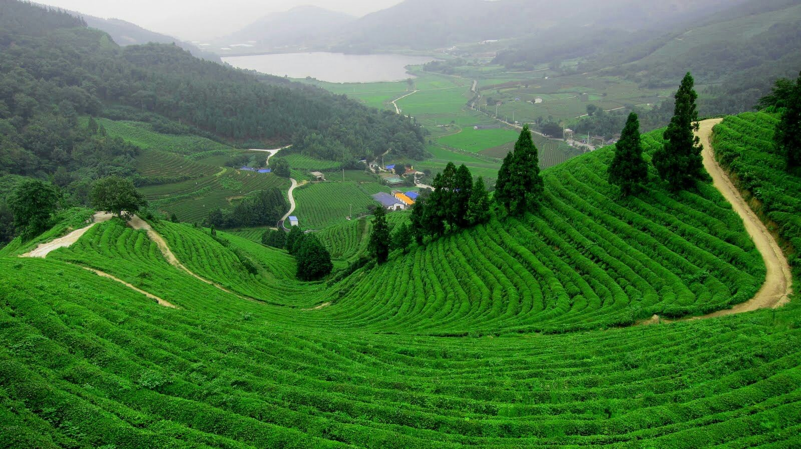

Overview of Bangladesh
Bangladesh has a natural beauty all over the country, Rivers are the most important geographical features in Bangladesh and also brings the natural attractiveness to it. Bangladesh has a plenty of places to enjoy and recreation,Cox's Bazar (120 kilometers) World Longest Natural Sea Beach is one of them. Cox's Bazar is the tourist capital of Bangladesh. Miles of golden sands, towering cliffs, surfing waves, rare conch shells, colorful pagodas, Buddhist temples and tribes, delightful sea-food--this is Cox's Bazar. Kuakata is one of the rarest places which have the unique beauty of offering the full view of the rising and setting of crimson sun in the water of the Bay of Bengal in a calm environment. That perhaps makes Kuakata one of the world's unique beaches. The long and wide beach at Kuakata has a typical natural setting. Foy's Lake is a man-made lake in Chittagong, Bangladesh. It was dug in 1924 and was named after the Railway engineer Foy. An amusement park Foy's Lake set amidst picturesque surroundings in the railway town-ship of Pahartali 8 km. from Chittagong, this is an ideal spot of outing and picnic thronged by thousands of visitors every week. If someone love the nature this is the place to go. Mohasthangarh is one of the main attractions in north Bengal. It was the capital of Kingdom of the Mourjo, the Gupta and the Sen Dynasty. This is the ancient archeological and historical which was, established in 2500 BC. It is the oldest archaeological site of Bangladesh. Overall Bangladesh is a place where someone really can spend a pleasurable and passionate time. Visiting in Bangladesh you will be able to find a lot of friendly people through the tour. People in Bangladesh have a great heart to all, may be the beauty of nature made it possible for all.